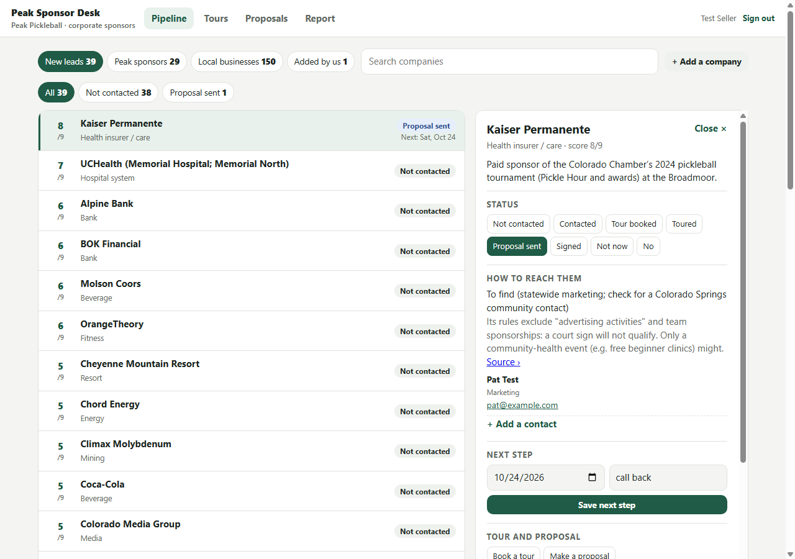

Peak Pickleball · corporate sponsors
Peak Sponsor Desk: how to use it
One place for every sponsor lead: who to call, what happened, tours at Peak, proposals and a report. Sign in with your own 6-digit code.

The lists
- New leads: companies ranked by a score out of 9 (fit with sports, fitness and health; money; already sponsors local sport; near Peak).
- Peak sponsors: Peak's current sponsors (renewals) and one that dropped off.
- Local businesses: owner-run businesses near Chapel Hills Mall in the same trades as Peak's sponsors. Walk in or call.
- Added by us: anything you add with "+ Add a company".
Working a company
- Tap a company. "How to reach them" shows the route and any contacts; a star marks who to ask for first. Emails and phones are tap-to-contact.
- Set the status as you go: Not contacted, Contacted, Tour booked, Toured, Proposal sent, Signed, Not now, No.
- Save a next step with a date; late ones turn red in the list.
- Write a note after every call or visit.
- Book a tour: pick the day, time and who is coming. It shows under Tours and moves the company to Tour booked.
- Make a proposal: tick the packages, add any other line, and it opens as a clean page. Press "Save as PDF / Print" and send it.
Report
The Report tab shows companies worked, tours coming up, proposals out and signed. "Open the report" makes a one-page summary to save as a PDF and share.
Packages and prices are set by the admin (Peak's published court sponsorship at $12,000 a year and title at $24,000 a year). New tiers need Peak's OK. Nothing in the desk is sent to anyone by itself.